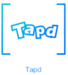

南开小栈：在线经验分享平台开发
1 项目描述
1.1 项目背景
该项目基于南开大学软件学院软件工程课程讲授内容进行设计，设计作品会参与腾讯的微信小程序设计大赛
，在项目的开发过程中采用敏捷开发的运行模式，团队成员在TAPD上进行任务协作，并在TGit上发布任务文件

团队成员：张慧斌，赵晨宇，郭立，吴科科
团队名称：Bugfree
- 目前市面上还没有一款信噪比高的、专门为一所学校的学生定制的提供经验分享的平台。为了获取学习和生活上的经验，我们需要多方联系高年级的学长学姐，浪费时间的同时，可能无法取得想要的答案。
- 本项目的主要思路是开发一款为南开学子提供经验互享平台的小程序，用户可以在不同板块发布自己的学习、生活经验，也可以在不同板块中阅读其他人分享的经验。
- 市面上曾出现过一些经验分享平台，但因为没有良好的激励机制，导致用户没有动力分享他们在学习和生活上的经验。本项目的创新性之一就是建立完善的激励机制，查看其他用户分享的学习经验需要消耗积分，而积分只能通过每日签到、分享经验和他人赞赏获得，这样用户就拥有了使用本产品并分享自己拥有的经验的动力。每日签到获取积分可以提高用户的留存度，分享经验获取积分可以提高用户的参与度，他人赞赏获得积分可以提高用户的内容质量。
1.2 操作环境
- 编程语言：待定
- 编程平台：微信web开发者工具
- 服务器：待定
- 数据库：待定
1.3 设计思路
- 本项目是一款校内经验交流分享小程序
- 本项目主要分为课程学习经验分享、升学经验分享、生活经验分享三个板块。
- 课程学习经验分享分为专业课程经验分享、公共课程经验分享、通识课经验分享。
- 升学经验分享分为考研经验分享、保研经验分享和留学经验分享。
- 生活经验分享为自由讨论板块，主要围绕南开的衣食住行分享自己的经验。
- 每位用户在注册时拥有一定积分，积分可以通过每日签到、分享经验和他人赞赏获得，用户阅读他人的经验需要消耗一定积分。
- 为学校内的一些生活，学生社团，图书馆，体育馆等组织设置机构认证，认证后的机构具有发布活动信息的权限，用户可以在小程序中看到由这些机构所发布的活动信息。
1.4 参考内容
2 详细设计
2.1 页面描述
目前暂无页面描述
3 开发总结
3.1 总结内容
目前暂无内容总结